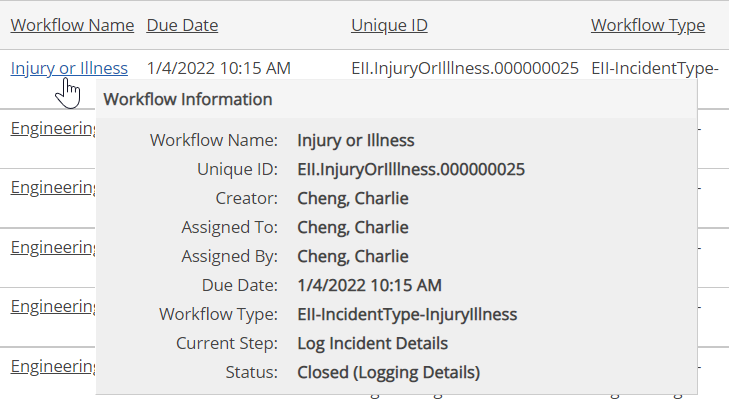
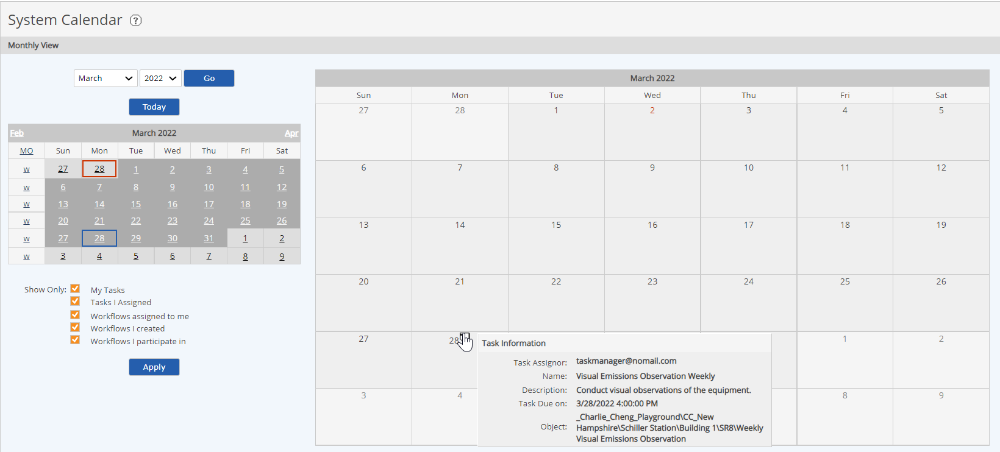

Open: Workflow is still in progress
Open: Workflow is still in progress Open Overdue: Workflow is in progress and overdue
Open Overdue: Workflow is in progress and overdue Closed: Workflow is completed
Closed: Workflow is completedYou can view a quick summary of a workflow via a popup window from the workflow list or from the calendar display.
You can view a workflow summary in the following ways:


The summary shows the Name, Unique ID, Creator, Assigned to, Assigned by, Due Date, Workflow Type, Current Step, and Status.
The workflow icons, seen on the calendar, indicate the current state of the workflow as follows:
Open: Workflow is still in progress Open Overdue: Workflow is in progress and overdue Closed: Workflow is completed